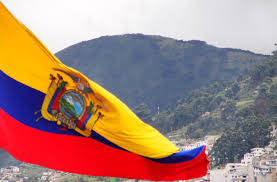

Респу́бліка Еквадо́р (ісп. Ecuador, кеч. Ikwadur) — країна в Південній Америці, що межує на півночі з Колумбією, сході і півдні з Перу, на заході омивається Тихим океаном; площа 270 670 км². Член ООН (з 1945), ОАД (з 1948), СОТ (з 1996), ОПЕК (з 1973), МВФ.
незалежність від Іспанії країна здобула 1830 року. Після тривалого періоду нестабільності чергувалися ліберальний і консервативний уряди до військового перевороту в 1963-му, коли до влади прийшла військова хунта. У 1982 в країні було оголошено надзвичайний стан через страйки й демонстрації. Сіксто Дюран Баллен у 1992 був обраний президентом замість Родріго Борхе Севаллоса.
Клімат екваторіальний та гірський-екваторіальний, на півдні — субекваторіальний. Загальна картина природно-кліматичних умов країни вкрай неоднорідна, фактично тут можна спостерігати велике розмаїття мікрокліматичних зон, пов'язаних з особливостями місцевого рельєфу. Погода навіть на близьких сусідніх частинах долини може кардинально мінятись через різну топографію. До характерних особливостей місцевого клімату також відноситься швидка зміна локальної погоди протягом дня, що пов'язано з різним нагріванням гірських схилів під впливом сонячних променів, що змінюють свій азимут протягом дня. Можна виділити в Еквадорі два сезони — вологий жаркий і сухий прохолодний.